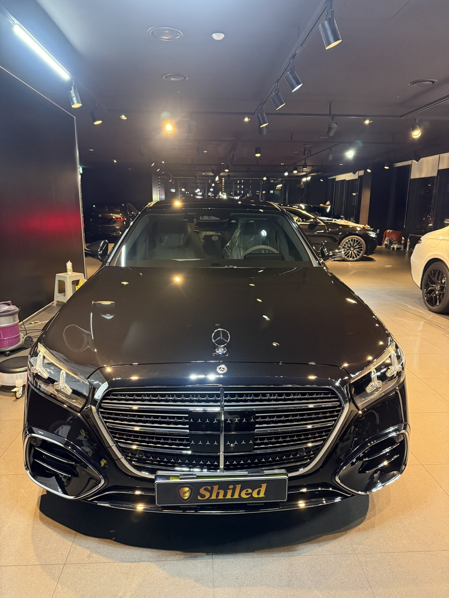
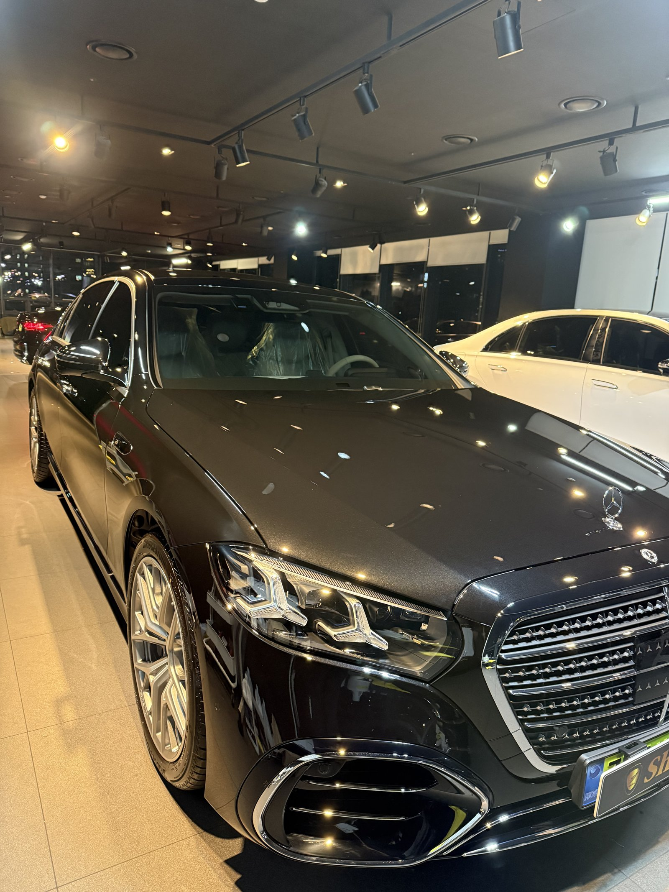
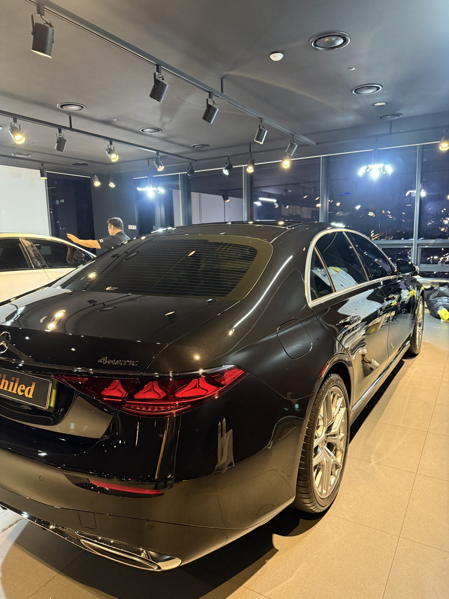
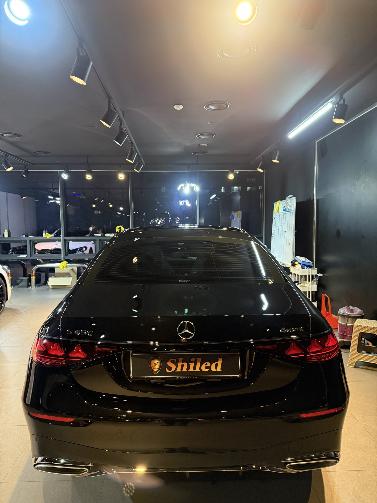
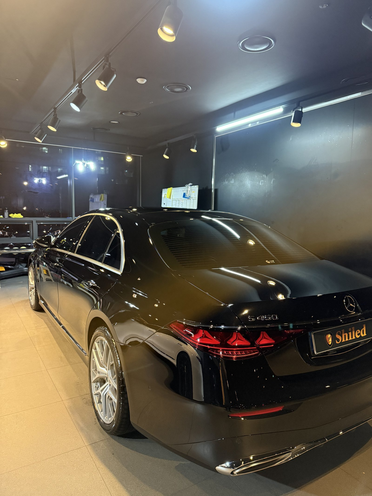
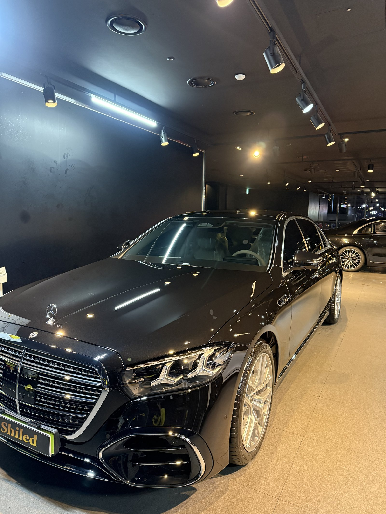
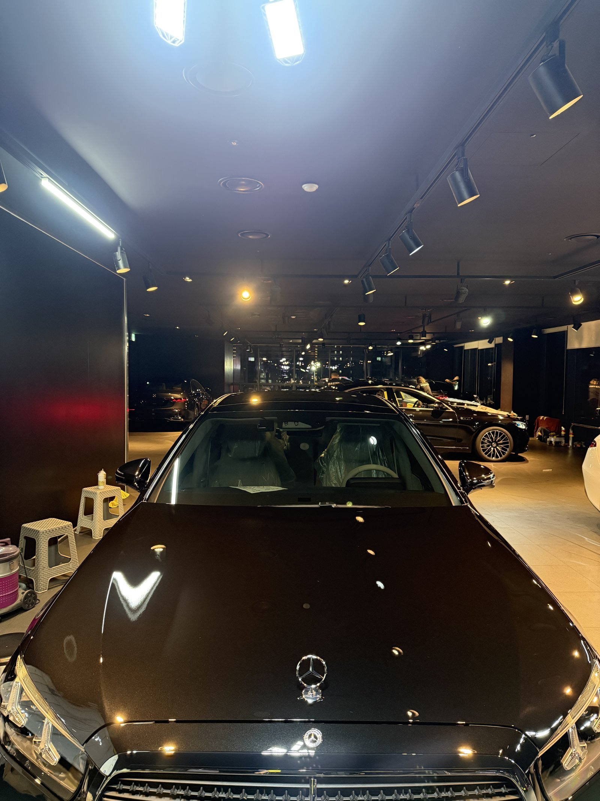
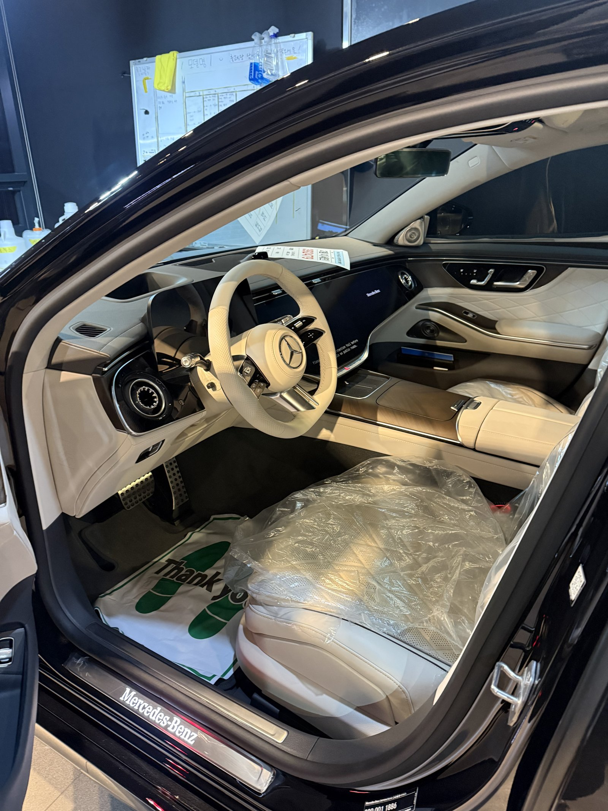
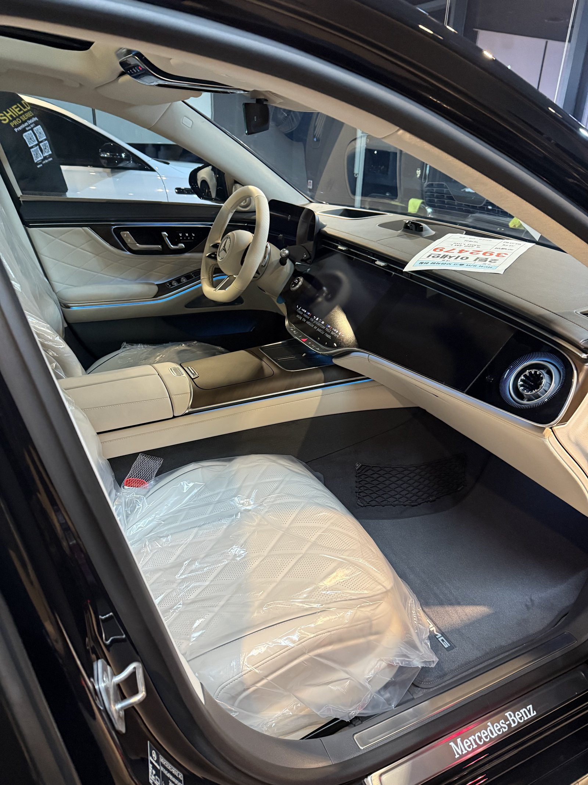
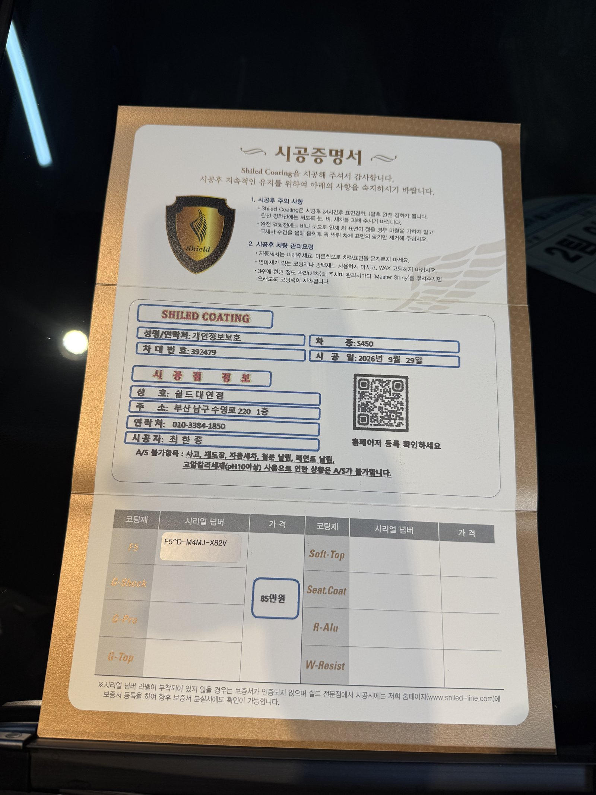

벤츠 S450, 검정입니다.
출고 전, 아이보리 시트에 비닐이 그대로 씌워진 새 차입니다.
검정 S클래스는 부산 유리막코팅 작업 중에서도 가장 긴장하는 조합입니다.

검정 S클래스는 왜 더 긴장하나요?
S클래스는 보닛이 길고 옆면이 넓습니다.
검정은 그 넓은 면에 비친 조명을 거울처럼 그대로 보여줍니다.
작은 얼룩 하나도 반사 줄이 휘는 것으로 드러납니다.
그래서 천장 조명 줄이 곧게 비치는지를 기준으로 면을 확인합니다.


S450 검정에 F5를 올린 이유
F5는 색감의 깊이와 글로시함에 특화된 코팅입니다.
검정은 채도가 받쳐줄 때 깊이가 생깁니다.
얕은 검정이 아니라 안쪽으로 빨려 들어가는 검정을 목표로 합니다.
코팅제는 대표가 직접 개발·제조한 제품입니다.

기술자의 팁
검정 차의 잔기스 대부분은 세차에서 생깁니다. 마른 수건으로 먼지를 닦거나, 오염이 남은 상태에서 문지르는 습관이 원인입니다. 충분히 물로 불린 뒤 부드러운 미트로 한 방향으로 닦아주시는 것이 좋습니다.



실내는 출고 전 그대로 지킵니다
출고 전 차량은 안팎 컨디션을 함께 챙깁니다.
실내는 시트 보호 비닐이 씌워진 신차 상태 그대로입니다. 외부는 F5로 마무리하고, 인도까지 깨끗한 상태로 관리합니다.


시공증명서를 함께 드립니다
모든 시공 차량에 시공증명서를 드립니다.
차종·시공일·코팅제 시리얼 번호가 적혀 있고, 홈페이지에 등록해 보증을 받으실 수 있습니다. 이 차는 F5로 기록돼 있습니다.

차종·시공일·코팅제 시리얼이 기재된 시공증명서
자주 묻는 질문
Q. 검정 S450에는 어떤 코팅이 맞나요?
A. 이 차는 F5로 진행했습니다. F5는 색감 깊이에 특화돼 검정의 깊이와 반사를 살려줍니다.
Q. 검정 차는 코팅해도 잔기스가 생기나요?
A. 코팅은 마찰을 줄여주지만 기스를 완전히 막지는 못합니다. 세차 습관을 함께 바꿔야 오래 갑니다.
Q. 왜 출고 전에 코팅하나요?
A. 도장면이 가장 깨끗할 때 올린 코팅이 가장 오래갑니다. 운행과 세차로 잔기스가 생기기 전에 입혀두는 것이 핵심입니다.
Q. 코팅 후 세차는 언제부터 하나요?
A. 코팅이 자리 잡을 시간이 필요하므로 시공 직후 강한 세차는 피하는 것이 좋습니다. 정확한 시점은 인도할 때 안내해 드립니다.
Q. 쉴드광택 위치와 예약은 어떻게 하나요?
A. 부산 남구 유엔로220 1F 쉴드광택입니다. 예약·상담은 010-3384-1850, 대표 최한중이 직접 상담하고 책임 시공합니다.
새 차일수록 시작점이 다릅니다. 가장 깨끗할 때 입혀두십시오.
제품을 직접 만드는 사람이 직접 시공합니다.
부산에서 신차 유리막코팅을 고민 중이시면 편하게 연락 주십시오.
어떤 차를 타냐보다 어떻게 타냐가 중요합니다~!
시공 중에는 전화를 받지 못할 때가 많습니다.
카카오톡으로 차종과 원하시는 시공을 남겨주시면 확인 후 답변드립니다.
쉴드광택 · 부산 남구 유엔로220 1F · 대표 최한중